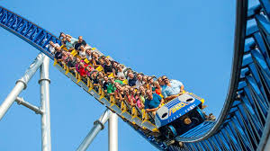

Roller Coasters

A roller coaster is a type of amusement ride employing a form of elevated railroad track that carries passengers on a train through tight turns, steep slopes, and other elements usually designed to produce a thrilling experience.[1][2] Trains consist of open cars connected in a single line, and the rides are often found in theme parks around the world. Roller coasters first appeared in the 17th century, and LaMarcus Adna Thompson obtained one of the first known patents for a roller coaster design in 1885, based on the Switchback Railway which opened a year earlier at Coney Island.